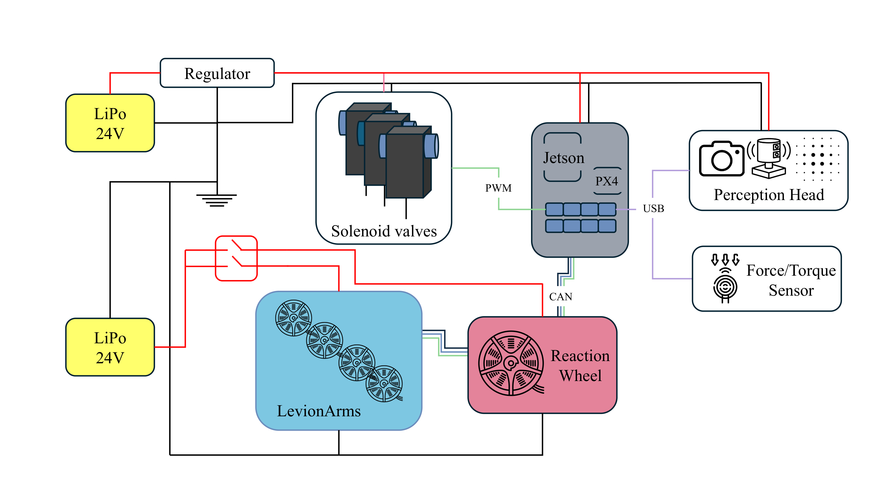
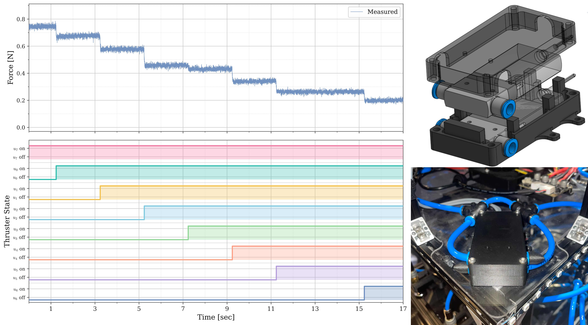
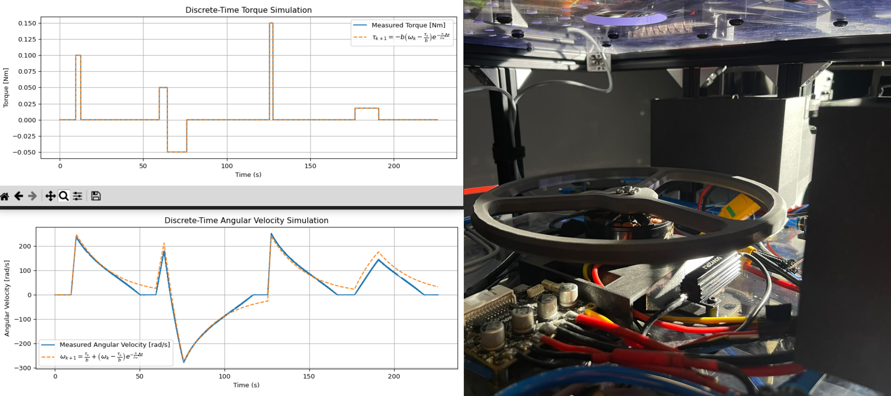
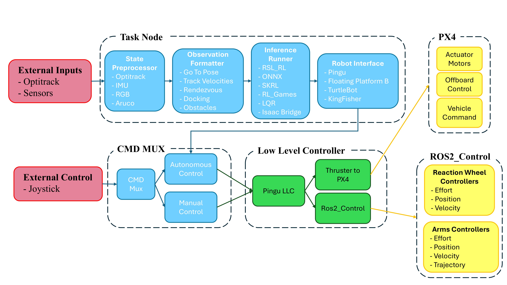
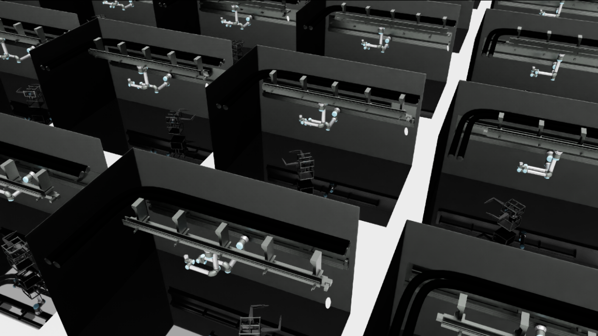
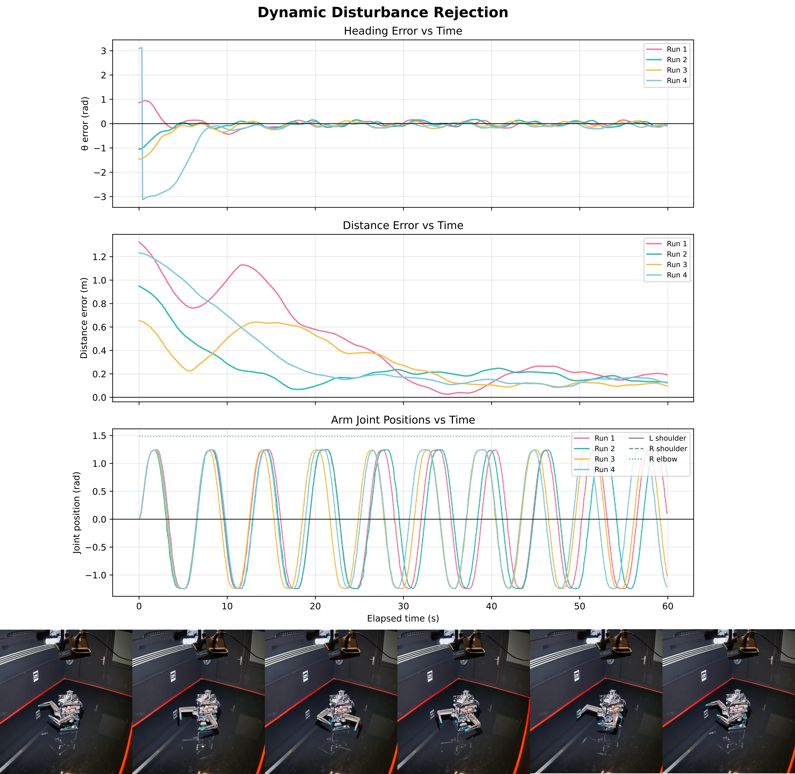
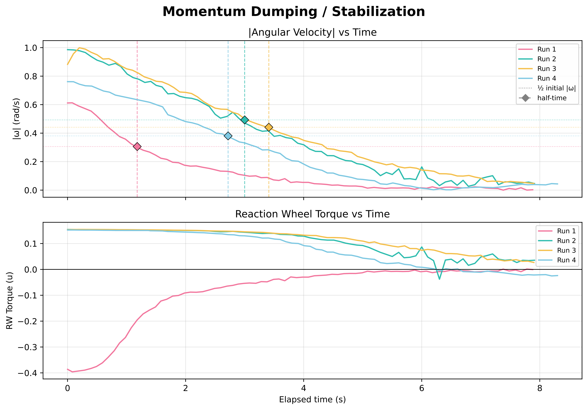
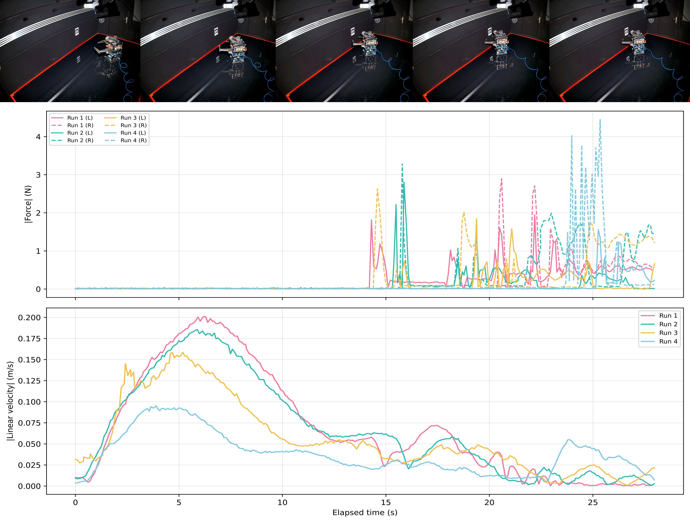

PINGU: Design, Characterization, and Validation of a Multi-Actuator Air-Bearing Spacecraft Emulator
Abstract
We characterize every actuator and validate the platform across four benchmark tasks: point-to-pose navigation, dynamic disturbance rejection under arm-induced center-of-mass shifts, reaction-wheel momentum stabilization, and force-controlled docking, deploying both a classical LQR baseline and sim-to-real PPO policies trained with domain randomization. Experimental results confirm PINGU’s effectiveness as a high-fidelity, reproducible, and versatile environment for developing and benchmarking the next generation of autonomous proximity operations.
Key Capabilities
Heterogeneous Actuation
Co-integrates an 8-thruster planar RCS, a high-torque brushless reaction wheel, and dual 2-DOF LevionArms with 6-axis force/torque wrist sensors on a single chassis.
Unified ROS 2 Stack
Exposes all hardware through a hardware-abstraction command multiplexer, allowing model-based (PID, LQR, MPC) and learned (PPO) policies to swap seamlessly.
Sim-to-Real Twin
Supported by a parallelized GPU simulation inside Isaac Lab (Space Robotics Bench) with extensive domain randomization over mass, inertia, and external forces.
System & Mechanical Design
PINGU features a vertically-layered, modular chassis (40cm x 40cm x 65cm) constructed from aluminum T-slot extrusions and polycarbonate panels. The system is split into four distinct functional layers designed to isolate structural, pneumatic, electronic, and robotic subsystems:

Figure 1. Mechanical Stack: (1) Pneumatic base with porous-graphite air bearings; (2) Actuation mid-section with reaction wheel and motors; (3) Power section; (4) Payload deck with sensors and robotic arms.
Four Stacked Layers
- Pneumatic Base: Carries three 150mm flat round porous-graphite air bearings arranged in an equilateral triangle. Using a 5-bar regulated supply, they sustain a 6μm aerostatic gap, supporting up to 1360 kg total load.
- Actuation Mid-Section: Houses the 8 cold-gas thruster solenoid valves, the 20cm diameter reaction wheel (metal-blended PLA disk with AMT212B encoder), and dual CubeMars AK80-8 motors.
- Power Section: Integrates dual isolated LiPo domains to isolate sensitive control hardware from high-current motor transients.
- Payload Deck: Holds the Jetson computing stack and exteroceptive sensor board.
Dual-Domain Electronics & Sensing
A Holybro Pixhawk Jetson Baseboard integrates a Pixhawk 6C flight controller and an NVIDIA Jetson Orin NX.
- Control Domain (Battery 1, 24V Regulated): Powers computing, exteroceptive sensors, and thruster solenoids.
- Actuation Domain (Battery 2, 22.2V Direct): Powers ODrive S1 motor controllers and CubeMars CAN-FD actuators.
- Exteroceptive Sensor Suite: Includes an Intel RealSense D455 RGB-D camera, FLIR Firefly camera, Prophesee Event camera, and Livox Mid-range LiDAR, linked via onboard Gigabit Ethernet.

Figure 2. Electronics Architecture: Split power domain routing with CAN bus communication lines and Ethernet signal paths.
Actuator Characterization
To build a high-fidelity digital twin and enable accurate control, we characterized both the thrusters and reaction wheel assemblies.

Thruster Manifold Coupling
Thruster box and pressure drop: Solenoids fire up to 500Hz (modulated at 10Hz in software). Firing multiple valves concurrently causes a drop in individual thrust output due to sharing the same supply manifold, which must be randomizing-modeled.

Reaction Wheel Envelope
Reaction wheel torque envelope: The 20cm metal-blended PLA disk delivers continuous, non-impulsive attitude torque. The measured torque-speed envelope characterizes the operational control authority limit.
Software Stack & Simulation
Two-Workspace ROS 2 Layer
PINGU runs a dual ROS 2 workspace architecture to strictly isolate drivers from controllers:
Low-Level Workspace: Runs hardware-facing nodes. Solenoid thruster inputs map directly to PX4 offboard actuator motors, and robotic arm/reaction wheel joints communicate with `ros2_control` over the shared CAN-FD bus.
Controller-Deployment Workspace: Runs a high-level RoboRAN task node. It preprocessing sensor telemetry, runs a 10Hz inference loop on PPO policies (MLP/GRU) via ONNX, or routes PID/LQR commands, feeding a safe command multiplexer.

Figure 3. Node Graph: The state processor, observation formatter, inference runner, and low-level controllers linked via ROS 2.

Figure 4. Parallelized Digital Twin: Space Robotics Bench (SRB) environment running thousands of instances simultaneously inside Isaac Lab.
Space Robotics Bench (Digital Twin)
The digital twin is implemented within the Space Robotics Bench (SRB) on top of NVIDIA Isaac Lab and Isaac Sim.
It models multi-body dynamics, binary thruster characteristics, reaction wheel speed limits, and the active 2-DOF LevionArms.
Massively parallel rollouts on a single GPU enable quick reinforcement learning training.
To close the sim-to-real gap, domain randomization is applied to base mass (±5kg), horizontal Center-of-Mass offset (0.1m), and constant external bias wrench (representing table tilt and thruster imbalance).
Experimental Tasks & Videos
Select a task below to view details, experimental results, and real hardware videos.
Hardware Video: PINGU correcting translation/heading while arms oscillate autonomously.
Dynamic Disturbance Rejection
The two robotic arms oscillate autonomously at ±0.8 rad, displacing the Center of Mass (CoM). Because arm motion is unobserved by the controller, it represents an exogenous dynamic perturbation that must be rejected implicitly from base feedback.
| Method | Deployment | Position Error [m] ↓ | Heading Error [rad] ↓ |
|---|---|---|---|
| PPO-GRU | Simulation (Sim) | 0.0070±0.0054 | 0.0074±0.0108 |
| PPO-GRU + DR | Sim + Rand (Sim) | 0.0156±0.0161 | 0.0340±0.0574 |
| PPO-GRU + DR | Real Hardware | 0.0889±0.0889 | 0.0346±0.0179 |

Figure 5. Telemetry: Error profiles and commanded joint position oscillations over a 60s trial.
Reaction Wheel Stabilization: Left shows base stabilization; Right shows reaction wheel assembly operating.
Momentum Dumping & Stabilization
PINGU is spun with a random initial angular rate between 0.1 to 0.5 rad/s. The task is to stabilize the base's attitude using only the reaction wheel. This is evaluated under different arm poses to test wheel response under varying base moments of inertia.
| Arm Configuration | Deployment | Residual Yaw Rate [rad/s] ↓ | Half-time t1/2 [s] ↓ |
|---|---|---|---|
| Side (Asymmetric) | Simulation | 0.0429±0.0148 | 4.0773±4.7499 |
| Real Hardware | 0.0594±0.0304 | 4.8450±1.8730 | |
| Rest (Max Inertia) | Simulation | 0.0467±0.0153 | 3.7975±1.6068 |
| Real Hardware | 0.0228±0.0229 | 6.3770±4.9410 |

Figure 6. Telemetry: Angular velocity decay profile (top) and commanded wheel brake torque (bottom) across four runs.
Force-Controlled Docking
This integrates PINGU's full stack:
1. The onboard RealSense D455 camera detects a wall-mounted ArUco marker to estimate the target pose relative to the robot.
2. The PPO point-to-pose controller drives the platform towards the docking wall.
3. Leptrino six-axis F/T sensors on the wrists register the contact onset.
4. Base propulsion stops, letting momentum carry the robot. The contact is safely damped by joint-space virtual spring-damper impedance loops in the LevionArms, absorbing kinetic energy without base rebound.

Figure 7. Contact Forces: Telemetry showing F/T contact force spikes during compliance damping and linear velocity decay.
BibTeX
@article{anonymous2026pingu,
title={PINGU: Design, Characterization, and Validation of a Multi-Actuator Air-Bearing Spacecraft Emulator},
author={Anonymous Authors},
journal={Under Review},
year={2026},
url={https://github.com/eliahuhorwitz/Academic-project-page-template}
}